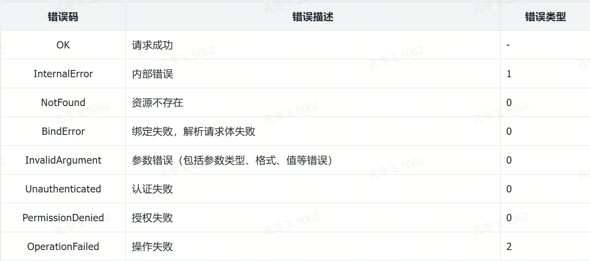

基础 Go 包开发：错误返回设计和实现
错误包在 Go 项目开发中主要用来返回错误或者打印错误。返回错误时，既需在代码内返回错误，又需要将错误返回给用户。在设计和实现错误包的时候，需要考虑上述使用场景。
错误返回方法
在 Go 项目开发中，错误的返回方式通常有以下两种：
- 始终返回 HTTP 200 状态码，并在 HTTP 返回体中返回错误信息；
- 返回 HTTP 400 状态码（Bad Request），并在 HTTP 返回体中返回错误信息。
方式一：成功返回，返回体中返回错误信息
例如 Facebook API 的错误返回设计，始终返回 200 HTTP 状态码：
{
"error": {
"message": "Syntax error \"Field picture specified more than once. This is only possible before version 2.1\" at character 23: id,name,picture,picture",
"type": "OAuthException",
"code": 2500,
"fbtrace_id": "xxxxxxxxxxx"
}
}
在上述错误返回的实现方式中，HTTP 状态码始终固定返回 200，仅需关注业务错误码，整体实现较为简单。然而，此方式存在一个明显的缺点：对于每一次 HTTP 请求，既需要检查 HTTP 状态码以判断请求是否成功，还需要解析响应体以获取业务错误码，从而判断业务逻辑是否成功。理想情况下，我们期望客户端对成功的 HTTP 请求能够直接将响应体解析为需要的 Go 结构体，并进行后续的业务逻辑处理，而不用再判断请求是否成功。
方式二：失败返回，返回体中返回错误信息
Twitter API 的错误返回设计会根据错误类型返回对应的 HTTP 状态码，并在返回体中返回错误信息和自定义业务错误码。成功的业务请求则返回 200 HTTP 状态码。例如：
HTTP/1.1 400 Bad Request
x-connection-hash: xxxxxxxxxxxxxxxxxxxxxxxxxxxxxxxxxxxxxx
set-cookie: guest_id=xxxxxxxxxxxxxxxxxxxxxxxxxxxxxxxxxxxx
Date: Thu, 01 Jun 2017 03:04:23 GMT
Content-Length: 62
x-response-time: 5
strict-transport-security: max-age=631138519
Connection: keep-alive
Content-Type: application/json; charset=utf-8
Server: tsa_b
{
"errors": [
{
"code": 215,
"message": "Bad Authentication data."
}
]
}
方式二相比方式一，对于成功的请求不需要再次判错。然而，方式二还可以进一步优化：整数格式的业务错误码 215 可读性较差，用户无法从 215 直接获取任何有意义的信息。建议将其替换为语义化的字符串，例如：NotFound.PostNotFound。
Twitter API 返回的错误是一个数组，在实际开发获取错误时，需要先判断数组是否为空，如不为空，再从数组中获取错误，开发复杂度较高。建议采用更简单的错误返回格式：
{
"code": "InvalidParameter.BadAuthenticationData",
"message": "Bad Authentication data."
}
需要特别注意的是，message 字段会直接展示给外部用户，因此必须确保其内容不包含敏感信息，例如数据库的 id 字段、内部组件的 IP 地址、用户名等信息。返回的错误信息中，还可以根据需要返回更多字段，例如：错误指引文档 URL 等。
miniblog 错误返回设计和实现
miniblog 项目错误返回格式采用了方式二，在接口失败时返回对应的 HTTP/gRPC 状态码，并在返回体中返回具体的错误信息，例如：
HTTP/1.1 404 Not Found
...
{
"code": "NotFound.UserNotFound",
"message": "User not found."
}
在错误返回方式二中，需要返回一个业务错误码。返回业务错误码可以带来以下好处：
- **快速定位问题：**开发人员可以借助错误码迅速定位问题，并精确到具体的代码行。例如，错误码可以直接指示问题的含义，同时通过工具（如 grep）轻松定位到错误码在代码中的具体位置；
- **便于排查问题：**用户能够通过错误码判断接口失败的原因，并将错误码提供给开发人员，以便快速定位问题并进行排查；
- **承载丰富信息：**错误码通常包含了详细的信息，例如错误的级别、所属错误类别以及具体的错误描述。这些错误信息可以帮助用户和开发者快速定位问题；
- **灵活定义：**错误码由开发者根据需要灵活定义，不依赖和受限于第三方框架，例如 net/http 和 google.golang.org/grpc；
- **便于逻辑判断：**在业务开发中，判断错误类别以执行对应的逻辑处理是一个常见需求。通过自定义错误码，可以轻松实现。例如：
import "errors"
import "path/to/errno"
if errors.Is(err, errno.InternalServerError) {
// 对应错误处理逻辑
}
制定错误码规范
错误码是直接暴露给用户的，因此需要设计一个易读、易懂且规范化的错误码。在设计错误码时可以根据实际需求自行设计，也可以参考其他优秀的设计方案。
一般来说，当调研某项技术实现时，建议优先参考各大公有云厂商的实现方式，例如腾讯云、阿里云、华为云等。这些公有云厂商直接面向企业和个人，专注于技术本身，拥有强大的技术团队，因此它们的设计与实现具有很高的参考价值。
经过调研，此处采用了腾讯云 API 3.0 的错误码设计规范，并将规范文档保存在项目的文档目录中：docs/devel/zh-CN/conversions/error_code.md。
腾讯云采用了两级错误码设计。以下是两级错误码设计相较于简单错误码（如 215、InvalidParameter）的优势：
**语义化：**语义化的错误码可以通过名字直接反映错误的类型，便于快速理解错误；
**更加灵活：**二级错误码的格式为<平台级.资源级>。其中，平台级错误码是固定值，用于指代某一类错误，客户端可以利用该错误码进行通用错误处理。资源级错误码则用于更精确的错误定位。此外，服务端既可根据需求自定义错误码，也可使用默认错误码。
miniblog 项目预定义了一些平台级错误码，如表 6-1 所示。

miniblog 错误包设计
开发一个错误包，需要先为错误包起一个易读、易理解的包名。在 Go 项目开发中，如果自定义包的名称如 errors、context 等，会与 Go 标准库中已存在的 errors 或 context 包发生命名冲突，如果代码中需要同时使用自定义包与标准库包时，通常会通过为标准库包起别名的方式解决。例如，可以通过 import stderrors "errors" 来为标准库的 errors 包定义别名。
为了避免频繁使用这种起别名的操作，在开发自定义包时，可以从包命名上避免与标准库包名冲突。建议将可能冲突的包命名为 <冲突包原始名>x**，**其名称中的“x”代表扩展（extended）或实验（experimental）。这种命名方式是一种扩展命名约定，通常用于表示此包是对标准库中已有包功能的扩展或补充。需要注意的是，这并非 Go 语言的官方规范，而是开发者为了防止命名冲突、增强语义所采用的命名方式。miniblog 项目的自定义 contextx 包也采用了这种命名风格。
因此，为了避免与标准库的 errors 包命名冲突，miniblog 项目的错误包命名为 errorsx，寓意为“扩展的错误处理包”。
由于 miniblog 项目的错误包命名为 errorsx，为保持命名一致性，定义了一个名为 ErrorX 的结构体，用于描述错误信息，具体定义如下：
// ErrorX 定义了 OneX 项目体系中使用的错误类型，用于描述错误的详细信息.
type ErrorX struct {
// Code 表示错误的 HTTP 状态码，用于与客户端进行交互时标识错误的类型.
Code int `json:"code,omitempty"`
// Reason 表示错误发生的原因，通常为业务错误码，用于精准定位问题.
Reason string `json:"reason,omitempty"`
// Message 表示简短的错误信息，通常可直接暴露给用户查看.
Message string `json:"message,omitempty"`
// Metadata 用于存储与该错误相关的额外元信息，可以包含上下文或调试信息.
Metadata map[string]string `json:"metadata,omitempty"`
}
ErrorX 是一个错误类型，因此需要实现 Error 方法：
// Error 实现 error 接口中的 `Error` 方法.
func (err *ErrorX) Error() string {
return fmt.Sprintf("error: code = %d reason = %s message = %s metadata = %v", err.Code, err.Reason, err.Message, err.Metadata)
}
Error() 返回的错误信息中，包含了 HTTP 状态码、错误发生的原因、错误信息和额外的错误元信息。通过这些详尽的错误信息返回，帮助开发者快速定位错误。
提示
miniblog 项目属于 OneX 技术体系中的一个实战项目，其设计和实现方式跟 OneX 技术体系中的其他项目保持一致。考虑到包的复用性，errorsx 包的实现位于 onexstack 项目根目录下的 pkg/errorsx 目录中。
在 Go 项目开发中，发生错误的原因有很多，大多数情况下，开发者希望将真实的错误信息返回给用户。因此，还需要提供一个方法用来设置 ErrorX 结构体中的 Message 字段。同样的，还需要提供设置 Metadata 字段的方法。为了满足上述诉求，给 ErrorX 增加 WithMessage、WithMetadata、KV 三个方法。实现方式如代码清单 6-8 所示。
代码清单 6-8 ErrorX 字段设置方法实现
// WithMessage 设置错误的 Message 字段.
func (err *ErrorX) WithMessage(format string, args ...any) *ErrorX {
err.Message = fmt.Sprintf(format, args...)
return err
}
// WithMetadata 设置元数据.
func (err *ErrorX) WithMetadata(md map[string]string) *ErrorX {
err.Metadata = md
return err
}
// KV 使用 key-value 对设置元数据.
func (err *ErrorX) KV(kvs ...string) *ErrorX {
if err.Metadata == nil {
err.Metadata = make(map[string]string) // 初始化元数据映射
}
for i := 0; i < len(kvs); i += 2 {
// kvs 必须是成对的
if i+1 < len(kvs) {
err.Metadata[kvs[i]] = kvs[i+1]
}
}
return err
}
在代码清单 6-8 中，设置 Message、Metadata 字段的方法名分别为 WithMessage、WithMetadata。WithXXX，在 Go 项目开发中是一种很常见的命名方式，寓意是：设置 XXX。KV 方法则以追加的方式给 Metadata 增加键值对。WithMessage、WithMetadata、KV 都返回了 *ErrorX 类型的实例，目的是为了实现链式调用，例如：
err := new(ErrorX)
err.WithMessage("Message").WithMetadata(map[string]string{"key":"value"})
在 Go 项目开发中，链式调用（chained method calls）是一种常见的设计模式，该模式通过在方法中返回对象自身，使多个方法调用可以连续进行。链式调用的好处在于：简化代码、提高可读性、减少错误可能性和增强扩展性，尤其是在对象构造或逐步修改操作时，非常高效直观。合理使用链式调用可以显著提升代码的质量和开发效率，同时让接口设计更加优雅。
errorsx 包的设计目标不仅适用于 HTTP 接口的错误返回，还适用于 gRPC 接口的错误返回。因此，ErrorX 结构体还实现了 GRPCStatus() 方法。GRPCStatus() 方法的作用是将自定义错误类型 ErrorX 转换为 gRPC 的 status.Status 类型，用于生成 gRPC 标准化的错误返回信息（包括错误码、错误消息及详细错误信息），从而满足 gRPC 框架的错误处理要求。GRPCStatus() 方法实现如下：
// GRPCStatus 返回 gRPC 状态表示.
func (err *ErrorX) GRPCStatus() *status.Status {
details := errdetails.ErrorInfo{Reason: err.Reason, Metadata: err.Metadata}
s, _ := status.New(httpstatus.ToGRPCCode(err.Code), err.Message).WithDetails(&details)
return s
}
在 Go 项目开发中，通常需要将一个 error 类型的错误 err，解析为 *ErrorX 类型，并获取 *ErrorX 中的 Code 字段和 Reason 字段的值。Code 字段可用来设置 HTTP 状态码，Reason 字段可用来判断错误类型。为此，errorsx 包实现了 FromError、Code、Reason 方法，具体实现如代码清单 6-9 所示。
代码清单 6-9 错误解析方法实现
// Code 返回错误的 HTTP 代码.
func Code(err error) int {
if err == nil {
return http.StatusOK //nolint:mnd
}
return FromError(err).Code
}
// Reason 返回特定错误的原因.
func Reason(err error) string {
if err == nil {
return ErrInternal.Reason
}
return FromError(err).Reason
}
// FromError 尝试将一个通用的 error 转换为自定义的 *ErrorX 类型.
func FromError(err error) *ErrorX {
// 如果传入的错误是 nil，则直接返回 nil，表示没有错误需要处理.
if err == nil {
return nil
}
// 检查传入的 error 是否已经是 ErrorX 类型的实例.
// 如果错误可以通过 errors.As 转换为 *ErrorX 类型，则直接返回该实例.
if errx := new(ErrorX); errors.As(err, &errx) {
return errx
}
// gRPC 的 status.FromError 方法尝试将 error 转换为 gRPC 错误的 status 对象.
// 如果 err 不能转换为 gRPC 错误（即不是 gRPC 的 status 错误），
// 则返回一个带有默认值的 ErrorX，表示是一个未知类型的错误.
gs, ok := status.FromError(err)
if !ok {
return New(ErrInternal.Code, ErrInternal.Reason, err.Error())
}
// 如果 err 是 gRPC 的错误类型，会成功返回一个 gRPC status 对象（gs）.
// 使用 gRPC 状态中的错误代码和消息创建一个 ErrorX.
ret := New(httpstatus.FromGRPCCode(gs.Code()), ErrInternal.Reason, gs.Message())
// 遍历 gRPC 错误详情中的所有附加信息（Details）.
for _, detail := range gs.Details() {
if typed, ok := detail.(*errdetails.ErrorInfo); ok {
ret.Reason = typed.Reason
return ret.WithMetadata(typed.Metadata)
}
}
return ret
}
在 Go 项目开发中，经常还要对比一个 error 类型的错误 err 是否是某个预定义错误，因此 *ErrorX 也需要实现一个 Is 方法，Is 方法实现如下：
// Is 判断当前错误是否与目标错误匹配.
// 它会递归遍历错误链，并比较 ErrorX 实例的 Code 和 Reason 字段.
// 如果 Code 和 Reason 均相等，则返回 true；否则返回 false.
func (err *ErrorX) Is(target error) bool {
if errx := new(ErrorX); errors.As(target, &errx) {
return errx.Code == err.Code && errx.Reason == err.Reason
}
return false
}
Is 方法中，通过对比 Code 和 Reason 字段，来判断 target 错误是否是指定的预定义错误。注意，Is 方法中，没有对比 Message 字段的值，这是因为 Message 字段的值通常是动态的，而错误类型的定义不依赖于 Message。
至此，成功为 miniblog 开发了一个满足项目需求的错误包 errorsx，代码完整实现见 onexstack 项目的 pkg/errorsx/errorsx.go 文件。
miniblog 错误码定义
在实现了 errorsx 错误包之后，便可以根据需要预定义项目需要的错误。这些错误，可以在代码中便捷的引用。通过直接引用预定义错误，不仅可以提高开发效率，还可以保持整个项目的错误返回是一致的。
miniblog 的预定义错误定义在 internal/pkg/errno 目录下。一些基础错误定义如下：
var (
// OK 代表请求成功.
OK = &errorsx.ErrorX{Code: http.StatusOK, Message: ""}
// ErrInternal 表示所有未知的服务器端错误.
ErrInternal = errorsx.ErrInternal
...
// ErrPageNotFound 表示页面未找到.
ErrPageNotFound = &errorsx.ErrorX{Code: http.StatusNotFound, Reason: "NotFound.PageNotFound", Message: "Page not found."}
...
)
更完整的预定义错误，可直接查看 internal/pkg/errno 中的错误定义文件。预定义错误保存在 internal/pkg 目录中，是因为这些错误跟 miniblog 项目耦合，不是通用的错误定义。
至此，miniblog 成功实现了错误返回代码的实现，完整代码见分支 feature/s08。
miniblog 错误返回规范
为了标准化接口错误返回，提高接口错误返回的易读性，miniblog 制定了以下错误返回规范：
- 所有接口都要返回 errorsx.ErrorX 类型的错误；
- 建议在错误的原始位置，使用 errno.ErrXXX 方式返回 miniblog 自定义错误类型，其他位置直接透传自定义错误：
package main
import (
"github.com/onexstack/miniblog/internal/pkg/errno"
"github.com/onexstack/miniblog/internal/pkg/log"
)
func main() {
if err := validateUser(); err != nil {
panic(err)
}
}
func validatePassword(password string) error {
if len(password) < 6 {
log.Errorw("Password is too short")
// 在错误最原始位置封装自定义错误
// 方式1：不带自定义信息的错误返回
return errno.ErrPasswordInvalid
// 方式2:带有自定义信息的错误返回
//return errno.ErrPasswordInvalid.WithMessage("Password is too short")
}
return nil
}
func validateUser() error {
// 直接透传 validatePassword 返回的自定义错误
if err := validatePassword("test"); err != nil {
return err
}
return nil
}
minilbog 错误包测试
本节就来测试下 errorsx 错误包及 errno 错误码。测试代码保存在 examples/errorsx/main.go 文件中，代码如代码清单 6-10 所示。
代码清单 6-10 errors 及 errno 测试代码
package main
import (
"fmt"
"github.com/onexstack/onexstack/pkg/errorsx"
"github.com/onexstack/miniblog/internal/pkg/errno"
)
func main() {
// 创建了一个 ErrorX 错误，表示数据库连接失败。
// Code: 500，表明是服务器内部错误。
// Reason: "InternalError.DBConnection"，表示错误的具体分类。
// Message: "Something went wrong: DB connection failed"，表示该错误的具体信息。
errx := errorsx.New(500, "InternalError.DBConnection", "Something went wrong: %s", "DB connection failed")
// fmt.Println 会调用 errx 的 Error 方法，输出：
// error: code = 500 reason = InternalError.DBConnection message = Something went wrong: DB connection failed metadata = map[]
fmt.Println(errx)
// 给错误添加元数据，增强错误的上下文信息，便于调试和追踪。
errx.WithMetadata(map[string]string{
"user_id": "12345", // 添加用户 ID 信息
"request_id": "abc-def", // 添加请求 ID 信息
})
// 继续向错误中添加元数据，这次使用了 KV 方法，它是一种更加简洁的方式，用 key-value 的模式逐一设置元数据。
// 这里添加 trace_id 信息，用于关联分布式链路信息。
errx.KV("trace_id", "xyz-789")
// 使用 WithMessage 方法更新错误的 Message 字段。
// 更新后的 Message 是：Updated message: retry failed。
// Note: 更新消息字段并不会影响 Code、Reason 和 Metadata，它只是说明错误的上下文发生了变化。
errx.WithMessage("Updated message: %s", "retry failed")
// 再次打印 errx，此时的内容已经发生了变化：
// error: code = 500 reason = InternalError.DBConnection message = Updated message: retry failed metadata = map[request_id:abc-def trace_id:xyz-789 user_id:12345]
// 元数据也会被一并输出。
fmt.Println(errx)
// 调用 doSomething 函数，生成一个错误，并打印它，这里返回一个更新过 Message 字段的预定义错误 errno.ErrUsernameInvalid。
someerr := doSomething()
// 打印错误。
// error: code = 400 reason = InvalidArgument.UsernameInvalid message = Username is too short metadata = map[]
fmt.Println(someerr)
// 调用预定义错误 errno.ErrUsernameInvalid 的 Is 方法，判断 someerr 是否属于该类型错误。
// Is 方法会比较 Code 和 Reason 字段（不会比较 Message 字段），如果两者一致，则返回 true。
// 因为 doSomething 返回的错误正是 errno.ErrUsernameInvalid 的实例，因此这里输出 true。
fmt.Println(errno.ErrUsernameInvalid.Is(someerr))
// 调用另外一个预定义错误 errno.ErrPasswordInvalid 的 Is 方法，比较 someerr 是否属于该错误。
// 因为 Reason 和 Code 不匹配（someerr 是 username 错误，而不是 password 错误），因此返回 false。
fmt.Println(errno.ErrPasswordInvalid.Is(someerr))
}
// 定义一个函数 doSomething，返回一个错误
func doSomething() error {
// 这里返回了一个已经定义的错误类型 errno.ErrUsernameInvalid，但动态地设置了 Message 字段为 "Username is too short"。
// 重点是：虽然错误的 Message 不同，但错误的 Code 和 Reason 是一致的，这方便使用 Is 方法进行类型判断而不受具体内容影响。
return errno.ErrUsernameInvalid.WithMessage("Username is too short")
}